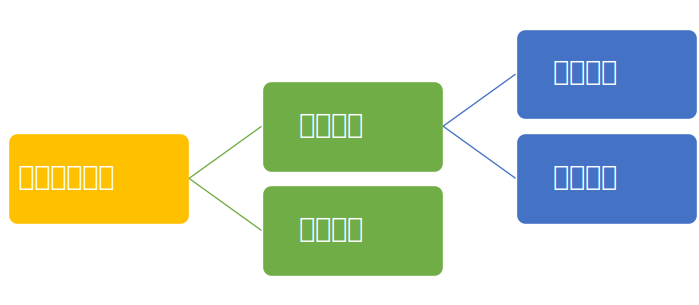

电机参数辨识
创建于2021-4-3
该项目完成于2018-11，原创
该项目完成于2018-11，原创
要实现对电机的控制，通常需要获得电机的相关参数，从额定电压、额定电流等铭牌数据，到定子电阻、定子电感等铭牌中没有的数据。不同的控制算法需要的电机参数不同，一般而言，控制性能越好的算法，需要的电机参数就越多，而且对参数精度的要求也越高。对于无法从电机铭牌中获得的参数，可以通过电机参数辨识获得。
电机参数辨识一般是通过变频器向电机注入特定的电压或电流信号，根据反馈电流或者实现注入信号所需的电压计算得到相应的电机参数。参数辨识分为离线辨识和在线辨识两类，离线辨识是指在电机运行之前先进行参数辨识，而在线辨识是在电机运行过程中对参数进行辨识。离线辨识目前应用相对较多，这里只对离线辨识进行介绍。离线辨识又可以分为静态辨识和动态辨识两类，静态辨识指辨识时保持电机不动，而动态辨识则需要电机旋转起来，然后对参数进行辨识。

某些参数，像是反电势，一般只能通过动态辨识获得，因为电机静止时，反电势为零，因此无法在静止时对反电势进行辨识。而定子电阻在静态时通过注入直流电流就可以辨识出来。其它参数如定子电感、电机互感等，既可以通过静态辨识，也可以通过动态辨识获得。对于很多参数而言，动态辨识获得结果的精度较静态辨识要高。但很多场合下，无法进行动态辨识，例如在电梯应用中，当电梯不运行时，电机转子被抱闸紧紧抱住，无法转动，因此无法进行动态辨识。这种情况下，提高静态辨识的精度，就很有必要。
为了部分参数静态辨识的精度，特开发了一套新的电机参数辨识算法。使用新开发的电机辨识算法，除电机反电势外，其它参数都可以在电机静态下获得较为准确的值，较传统方法的精度有很大提高。